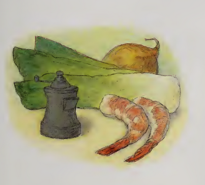

Shrimp'n'Hotroot Soup

Description
The signature soup of otters far and wide. This recipe is rather mild, for creatures like myself that aren’t partial to hot food. But if you’re an otter, or you dare to try and be like one- be generous with the chili/curry powder, or consider adding chopped peppers.
Ingredients
- 2 tablespoons unsalted butter
- 1 large onion, chopped
- 2 medium leeks, washed well and chopped
- 1½ cups vegetable stock (or 1½ cups water and ½ cube vegetable bouillon
- 3 medium potatoes, peeled and chopped
- 1 teaspoon curry powder or chili powder, or to taste
- Salt and pepper, to taste
- 8 ounces peeled, cooked shrimp or prawns, sliced if large
- 1 cup milk
Steps
-
In a large pot over medium heat, melt the butter. Add the onion and leeks and cook, stirring until soft, about 5 minutes (do not let the vegetables brown).
-
Add the vegetable stock, potatoes, curry or chili powder and salt and pepper. Cover and simmer until the potatoes are very soft, 15 to 20 minutes
-
Add the shrimp and milk and gently heat. Serve with crusty bread.